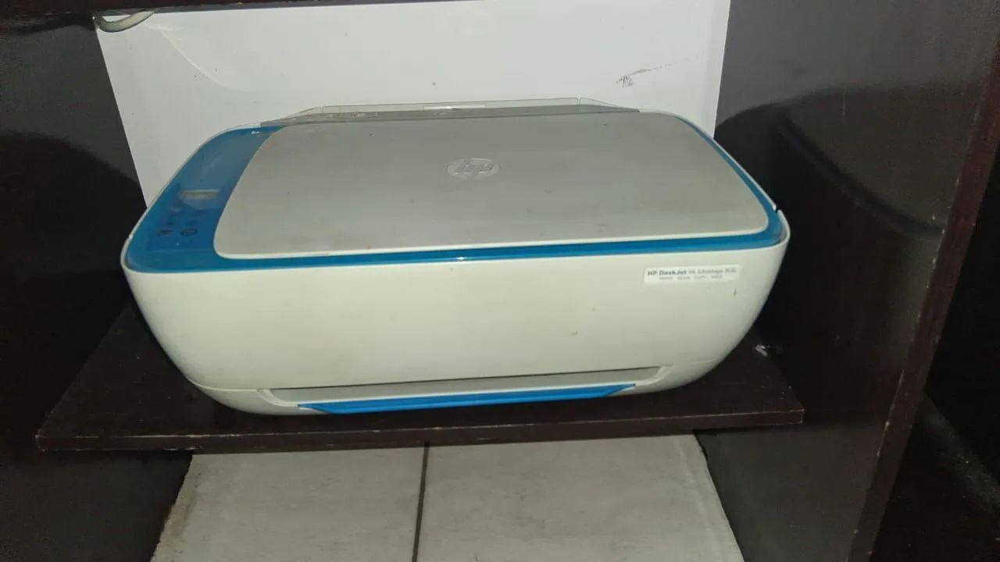
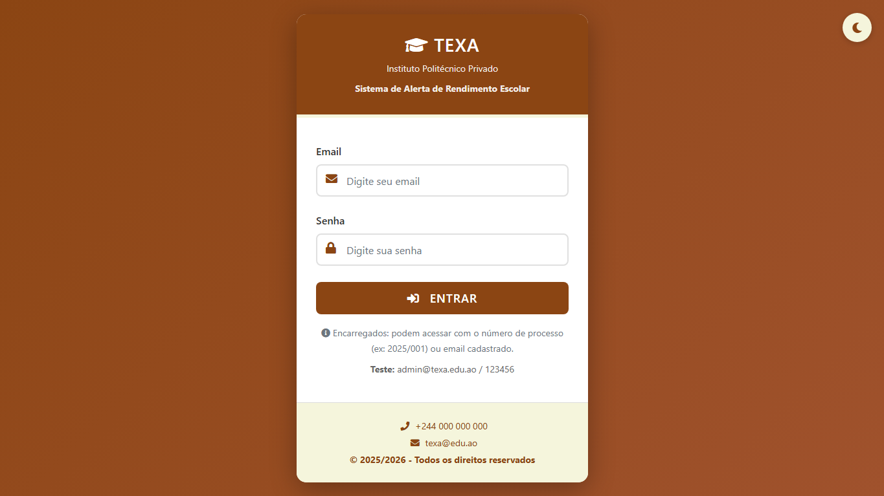
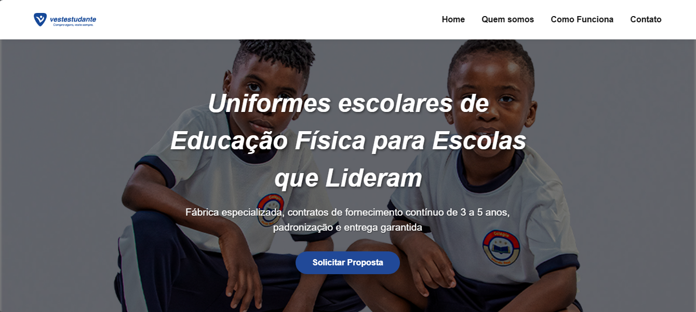

Sobre Mim
Conheça minha trajetória no mundo da tecnologia
Olá, sou Abreu Hengue
Luanda, Angola
Sou formado em Informática de Gestão, com uma grande paixão por hardware – desmontar, reparar e dar vida nova a computadores e dispositivos é o que mais me motiva.
Sou o fundador e dono do Cyber Cantilos, um espaço em Luanda onde ofereço serviços de informática, edição de documentos, trabalhos escolares e muito mais à comunidade local.
Realizei estágio na F.Damata, onde aprofundei os meus conhecimentos em gestão e programação web, combinando a teoria académica com a prática do dia-a-dia no meu cyber.
Ao longo do meu percurso, desenvolvi diversos projetos web, incluindo a criação de sites para VestEstudante, Projeto Zerar e também para a apresentação do meu TCC, reforçando as minhas competências em desenvolvimento web e soluções digitais.
💡 Este portfólio é o meu primeiro projecto web, desenvolvido durante o estágio para apresentar o meu trabalho e os serviços do Cyber Cantilos.
Serviços do Cyber Cantilos
Soluções completas para suas necessidades digitais
Edição de Documentos
Trabalhos escolares e acadêmicos (7º ao 13º ano) com qualidade profissional.
Reparos Especializados
Manutenção e reparo de PCs, celulares e outros dispositivos eletrônicos.
Instalação & Configuração
Windows, jogos, programas e configuração completa de sistemas.
Consultoria Técnica
Orientação para compra dos equipamentos certos em locais seguros e confiáveis.
Serviços Adicionais
Impressão, acesso à internet e outros serviços de informática.
Criação de web sites
Criação de sites estratégicos e dinamicos.
Galeria de Trabalhos
Conheça um pouco do nosso trabalho diário






Parcerias Estratégicas
Trabalhamos com os melhores para entregar excelência
Designers Gráficos
Colaboração com talentosos profissionais de design para projetos visuais de alta qualidade.
Fornecedores Confiáveis
Parceria com lojas estabelecidas para garantir peças e equipamentos de qualidade.
Tecnicos de Hardware seguros e profissionais
Ligação com tecnicos de hardware profissionais com a qualidade superior no mercado nacional.
Entre em contato para recomendações e orçamentos personalizados!
Entre em Contato
Estou pronto para ajudar com suas necessidades digitais
Pronto para começar?
Envie uma mensagem e vamos discutir como posso ajudar com seu projeto!
Iniciar Conversa no WhatsApp